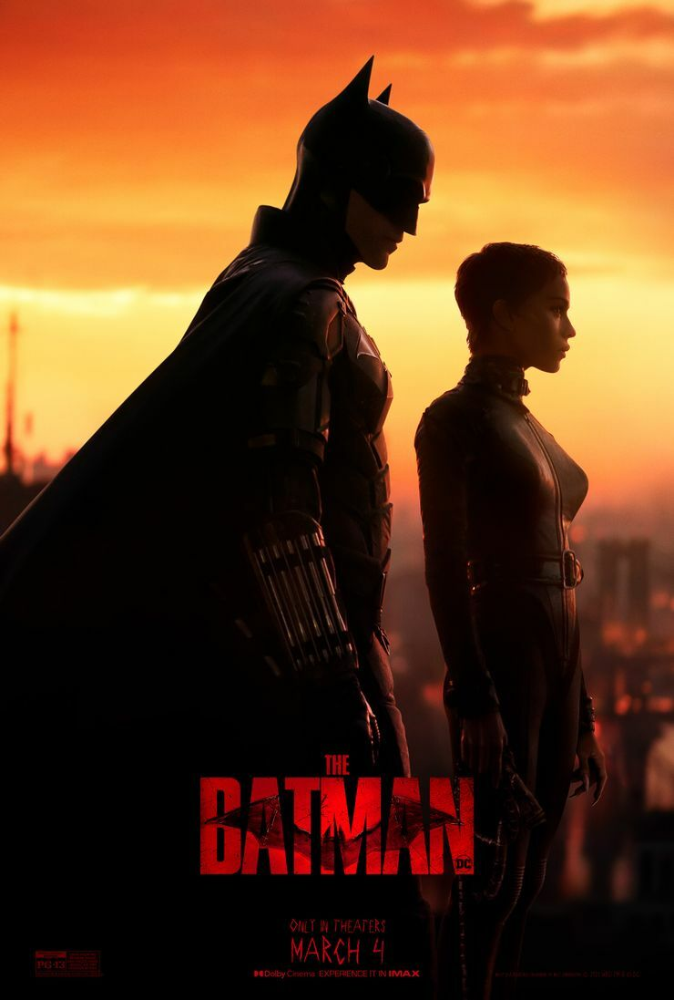
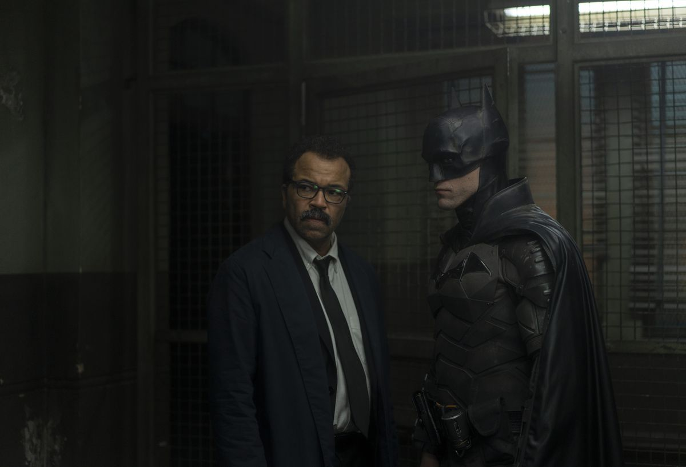
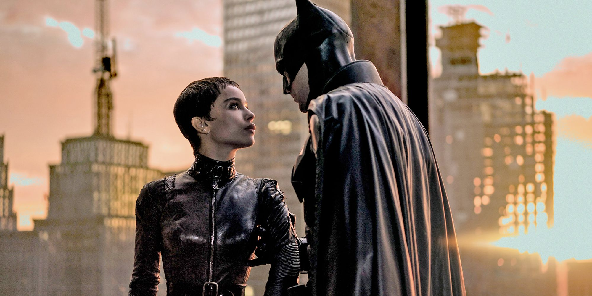

The Batman : Critique qui crie vengeance

Titre : Le Batman
Réalisateur : Matt Reeves
Durée: 2h56min
3 mars 2022 14h21
Cote : *****
Genre : Action
Critique écrite par : Antoine Desrues
On aura eu le temps de fantasmer les nouvelles aventures du Chevalier Noir nommé Batman ! Lancé en 2017 après l'annulation du film de Ben Affleck, The Batman n'a cessé de titiller la curiosité du monde entier par ses partis-pris. De la présence de Matt Reeves à la réalisation (Cloverfield, La Planète des singes : Suprématie) au casting de Robert Pattinson, Zoë Kravitz, Paul Dano, Colin Farrell et Jeffrey Wright, cette réincarnation de l'icône de DC avait tout pour se hisser au niveau de The Dark Knight de Christopher Nolan. Avait-on raison d'espérer ?
NOIR C'EST NOIR
Une rue dans la pénombre. De cette simple image, The Batman nous laisse entrevoir quelque chose de spécial : un retour à la peur primaire du noir, et aux démons que l'on imagine en sortir. Les quinze premières minutes du film, qui décrochent la mâchoire par leur efficacité et leur virtuosité, synthétisent une note d'intention merveilleuse, pour une entrée en matière remarquable. Le Chevalier Noir de Gotham est un boogeyman de film d'horreur, qui sculpte les ténèbres pour mieux hanter les rues de sa ville natale. Avec sa voix-off désabusée de film noir, cette réinvention du super-héros impose une forme rugueuse, autant sur le plan visuel que sonore. Quelque part entre le réalisme contemporain de Nolan et le rétro-futurisme cher à Bruce Timm, les textures font vibrer cette éternelle Sodome et Gomorrhe, dont l'incarnation s'accorde à la violence rêche de son justicier. Comme régurgité par cet enfer qui lui a tout pris, Batman n'est que l'excroissance maladive de Gotham, voire est-il Gotham, tant il se fond dans ses torrents d'ombre.
Avec sa voix-off désabusée de film noir, cette réinvention du super-héros impose une forme rugueuse, autant sur le plan visuel que sonore. Quelque part entre le réalisme contemporain de Nolan et le rétro-futurisme cher à Bruce Timm, les textures font vibrer cette éternelle Sodome et Gomorrhe, dont l'incarnation s'accorde à la violence rêche de son justicier. Comme régurgité par cet enfer qui lui a tout pris, Batman n'est que l'excroissance maladive de Gotham, voire est-il Gotham, tant il se fond dans ses torrents d'ombre.
AU NIRVANA SUPER-HÉROÏQUE
D'un autre côté, The Batman nous avait prévenus dès sa première et magistrale bande-annonce. En utilisant la chanson In The Way de Nirvana en étendard grunge (qu'on retrouve d'ailleurs dans le résultat final), c'est toute une philosophie à la fois rebelle et sans espoir qui tiraille l’œuvre. Cet esprit de sale gosse rend le choix de Robert Pattinson encore plus évident, et impose l'une des plus belles incarnations du Croisé capé
Parfait dans la peinture d'un justicier ultra-violent, l'acteur joue aussi brillamment avec la vulnérabilité inhérente à son regard, régulièrement accentuée par de très jolis gros plans. La connexion entre Bruce Wayne et Kurt Cobain est tellement limpide qu'on en vient à se demander pourquoi personne ne l'avait exploitée avant : l'enfant milliardaire traumatisé ne cherche pas à jouer au playboy pour s'assurer une couverture. Il est reclus, à la manière d'une rock-star dont l'addiction serait moins les drogues dures que les cavalcades nocturnes en quête de bras à casser.
VERS L'AUTRE REEVES
En réalité, The Batman se distingue aisément de la concurrence par sa cohésion thématique sans failles. D'aucuns diraient que ce nivellement par le bas est représentatif de la qualité globale du cinéma hollywoodien contemporain, et cela n'excuse pas totalement les quelques excès de zèle du film (notamment sur sa durée de presque trois heures). Pour autant, des costumes aux allures rustiques de David Crossman, Glyn Dillion et Jacqueline Durran en passant par la musique d'ores et déjà incontournable de Michael Giacchino, tout est dirigé vers une vision claire et revigorante, qui avance à pas feutrés comme la Catwoman hypnotique de Zoë Kravitz.
Tout ce beau monde évolue à merveille devant la caméra de Matt Reeves, plus que jamais ancrée dans la réalité de sa diégèse. En accrochant son objectif au Bat-grappin ou à la carlingue de la Batmobile, le cinéaste assume la lourdeur de son univers, la gravité de laquelle tente de s'extirper un simple homme coincé dans un costume pare-balles. Au-delà d'offrir des scènes d'actions à la fois lisibles et impactantes, ce postulat permet à Batman de s'affirmer comme l'éponge qui absorbe les questionnements et les doutes de l'Amérique.
Là où The Dark Knight était un film qui affichait une foi inébranlable dans le peuple de Gotham, solidaire dans l'adversité dans un contexte post-11 septembre, The Batman constate, non sans un point de vue diablement nihiliste, que le monde a bien changé en dix ans. Matt Reeves nous offre une œuvre terminale sur la désillusion envers le système, qui contraint le super-héros à combattre certains des citoyens qu'il s'est juré de protéger.
Source article :
https://www.ecranlarge.com/films/critique/1420450-the-batman-critique-qui-crie-vengeance
Source images :
https://www.denofgeek.com/movies/the-batman-stream-online-release-date/
https://www.denofgeek.com/movies/the-batman-stream-online-release-date/
https://www.polygon.com/reviews/22951429/the-batman-movie-review-2022
https://www.esquire.com/entertainment/movies/a39311167/the-batman-robert-pattinson-movie-review/